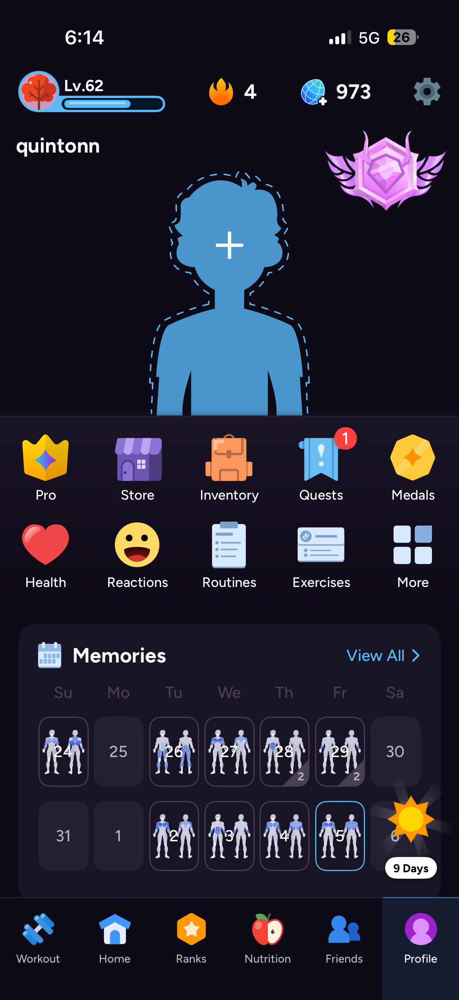
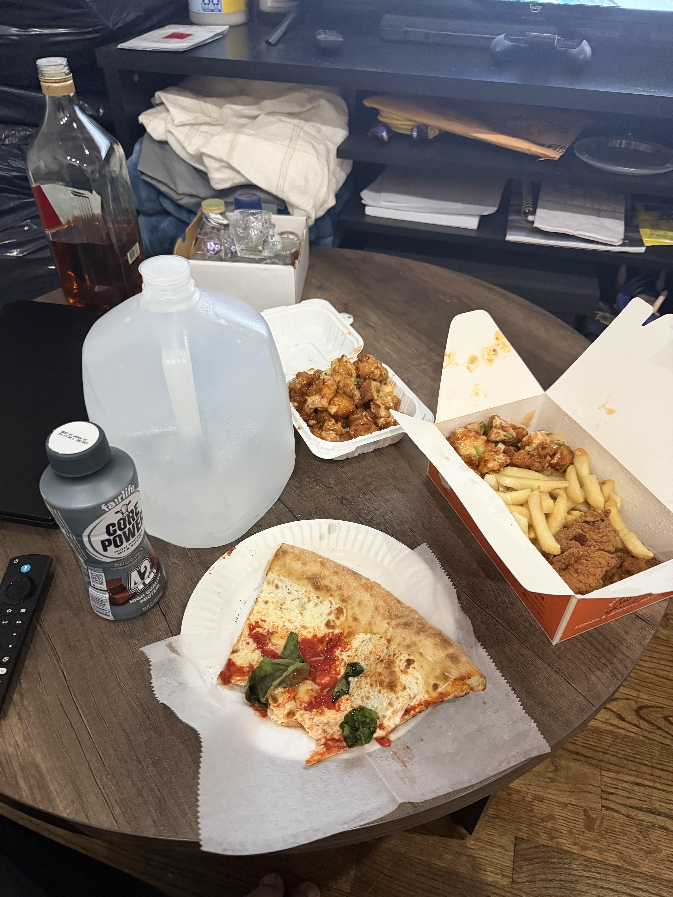

I have been weightlifting for the past four years and tracking my nutrition for probably the last three. Since then I've hit some notable milestones, like a 315 lb bench press. I have also become an accredited personal trainer with the ISSA, or the International Sports Science Association. The gym was probably one of the biggest changes in my life and really helped with my self confidence issues and body image, which is why I picked up personal training to help it have the same effect for others.
I wonder what the tip's gonna be
Having lifted for so long, a lot of people ask me what the biggest thing is for me. Personally, it's tracking everything to know how much I'm eating and how much I'm lifting. To ensure I am eating and growing, I track using two apps, which I have screenshotted below.

Image credit: Quinton Nguyen (screenshot)
Wanna see the type of meal I need to eat to hit my macros move? Click me!

Image credit: Quinton Nguyen
One of the most famous sounds in weightlifting: Ronnie Coleman's "Lightweight baby!!!" Click this paragraph to hear it!